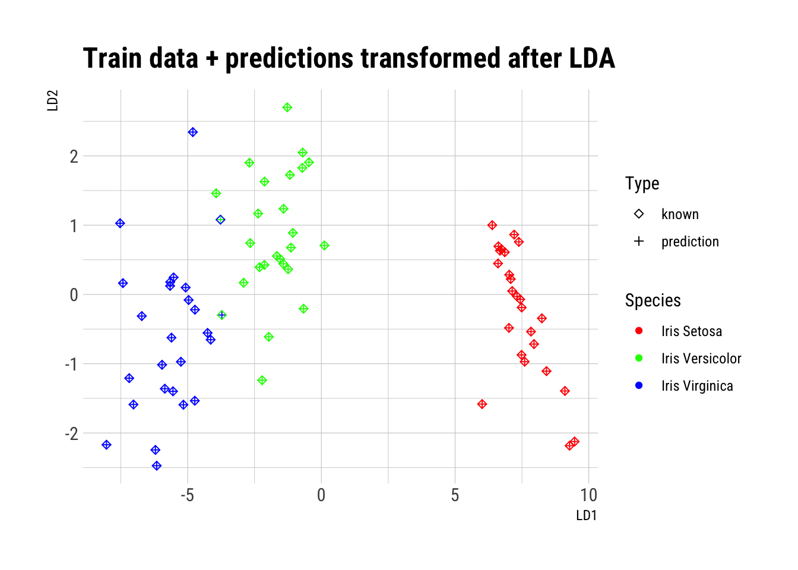

Código
iris_data <- iris
head(iris_data)Clasificación con el conjunto de datos iris.
El conjunto de datos flor Iris o conjunto de datos iris de Fisher es un conjunto de datos multivariante introducido por Ronald Fisher en su artículo de 1936 The use of multiple measurements in taxonomic problems (El uso de medidas múltiples en problemas taxonómicos) como un ejemplo de análisis discriminante lineal. El conjunto de datos contiene 50 muestras de cada una de tres especies de Iris (Iris setosa, Iris virginica e Iris versicolor). Se midieron cuatro rasgos de cada muestra: el largo y ancho del sépalo y pétalo, en centímetros. Basado en la combinación de estos cuatro rasgos, Fisher desarrolló un modelo discriminante lineal para distinguir entre una especie y otra (Fuente: Wikipedia).

Cargamos el conjunto de datos iris desde datasets.
iris_data <- iris
head(iris_data)Resumen estadístico básico de los datos: mínimos, máximos, medias, medianas, cuartiles, etc.
summary(iris_data) Sepal.Length Sepal.Width Petal.Length Petal.Width
Min. :4.300 Min. :2.000 Min. :1.000 Min. :0.100
1st Qu.:5.100 1st Qu.:2.800 1st Qu.:1.600 1st Qu.:0.300
Median :5.800 Median :3.000 Median :4.350 Median :1.300
Mean :5.843 Mean :3.057 Mean :3.758 Mean :1.199
3rd Qu.:6.400 3rd Qu.:3.300 3rd Qu.:5.100 3rd Qu.:1.800
Max. :7.900 Max. :4.400 Max. :6.900 Max. :2.500
Species
setosa :50
versicolor:50
virginica :50
Los cuartiles se pueden ver gráficamente también, por ejemplo para Sepal.Lenght.
boxplot(iris_data$Sepal.Length ~ iris_data$Species)
El histograma sirve para observar la distribución de los valores de una variable (cuáles se repiten y cómo).
ggplot(data = iris_data) +
geom_histogram(aes(x = Sepal.Length), bins = params$n_bins,
color = "white", fill = "green")
La función de densidad es una versión suavizada del histograma, útil para datos continuos.
ggplot(data = iris_data) +
geom_density(aes(x = Sepal.Length),
color = "white", fill = "lightgray")
La Figura 1 muestra que las clases son claramente separables a partir de las variables de predicción.
Con ggpairs podemos mostrar varios gráficos y métricas: correlación entre variables numéricas, densidades y diagramas de dispersión.
ggpairs(iris_data, columns = 1:4, aes(color = Species, alpha = 0.5))Warning in geom_point(): All aesthetics have length 1, but the data has 16 rows.
ℹ Did you mean to use `annotate()`?
Normalizamos los datos para el cálculo de distancias con preProcess .
sobj <- preProcess(iris_data[1:4], method=c("scale"))
iris_scaled <- predict(sobj, iris_data[1:4]) %>% mutate(Species = iris_data$Species)Separamos las instancias que se usarán como entrenamiento de los individuos de validación usando createDataPartition de caret.
set.seed(0)
trainIndex <- createDataPartition(iris_scaled$Species, p = .50, list = FALSE)
train <- iris_scaled[trainIndex, ]
val <- iris_scaled[-trainIndex, ]Podemos aplicar k-NN para clasificar los datos de validación a partir de las instancias de entrenamiento.
knn.pred <- knn(train[1:4], val[1:4], train$Species, k = 5)Calculadas las predicciones de los datos de validación, podemos comprobar los aciertos.
(t <- table(knn.pred, val$Species))
knn.pred setosa versicolor virginica
setosa 25 0 0
versicolor 0 22 1
virginica 0 3 24Y calcular una tasa de acierto.
val_acc_rate <- (t[1,1] + t[2,2] + t[3, 3]) / nrow(val)
print(paste0("% de acierto en validación: ", val_acc_rate))[1] "% de acierto en validación: 0.946666666666667"Podemos marcar sobre el gráfico de Petal.Lenght vs Petal.Width los valores conocidos y las predicciones.
plot_data <- val %>%
mutate(prediction = knn.pred) %>%
rename(known = Species) %>%
pivot_longer(c("prediction", "known"))
ggplot(data = plot_data) +
geom_point(aes(x = .data[[params$comparar_x]], y = .data[[params$comparar_y]], shape = name, color = value)) +
labs(x = params$comparar_x, y = params$comparar_y) +
scale_colour_manual(name = "Species", values=c("red", "green", "blue"), labels=c("Iris Setosa", "Iris Versicolor", "Iris Virginica")) +
scale_shape_manual(name = "Type", values=c(5, 3))El primer paso con LDA es comprobar las hipótesis de partida. Más en detalle:
– Que las observaciones siguen una distribución normal para cada predictor.
plot_data <- iris_data %>%
pivot_longer(-Species)
ggplot(data = plot_data) +
geom_density(aes(x=value, fill=name)) +
facet_wrap(~ Species + name, scales = "free") +
labs(title = "Density functions for each predictor and target value") +
scale_fill_ipsum(name ="Predictor") +
theme_ipsum_rc()
Cuantitativamente, podemos realizar el test de normalidad de Shapiro-Wilk con shapiro.test.
my_shapiro <- function(a) {
shapiro.test(a)$statistic
}
iris_data %>%
group_by(Species) %>%
summarise(across(Sepal.Length:Petal.Width, my_shapiro))– Que las matrices de varianza-covarianza son homogéneas.
plot_data <- iris_data %>%
pivot_longer(-Species)
ggplot(plot_data) +
geom_boxplot(aes(x=name, y=value, fill=Species)) +
labs(title = "Boxplots for each predictor and target value") +
scale_fill_ipsum(name ="Species") +
theme_ipsum_rc()
Cuantitativamente, podemos calcular las matrices de covarianza o aplicar el test de Bartlett con bartlett.test.
iris_data %>%
group_by(Species) %>%
group_map(~var(.x))[[1]]
Sepal.Length Sepal.Width Petal.Length Petal.Width
Sepal.Length 0.12424898 0.099216327 0.016355102 0.010330612
Sepal.Width 0.09921633 0.143689796 0.011697959 0.009297959
Petal.Length 0.01635510 0.011697959 0.030159184 0.006069388
Petal.Width 0.01033061 0.009297959 0.006069388 0.011106122
[[2]]
Sepal.Length Sepal.Width Petal.Length Petal.Width
Sepal.Length 0.26643265 0.08518367 0.18289796 0.05577959
Sepal.Width 0.08518367 0.09846939 0.08265306 0.04120408
Petal.Length 0.18289796 0.08265306 0.22081633 0.07310204
Petal.Width 0.05577959 0.04120408 0.07310204 0.03910612
[[3]]
Sepal.Length Sepal.Width Petal.Length Petal.Width
Sepal.Length 0.40434286 0.09376327 0.30328980 0.04909388
Sepal.Width 0.09376327 0.10400408 0.07137959 0.04762857
Petal.Length 0.30328980 0.07137959 0.30458776 0.04882449
Petal.Width 0.04909388 0.04762857 0.04882449 0.07543265bartlett.test(Sepal.Length ~ Species, iris_data)
Bartlett test of homogeneity of variances
data: Sepal.Length by Species
Bartlett's K-squared = 16.006, df = 2, p-value = 0.0003345bartlett.test(Sepal.Width ~ Species, iris_data)
Bartlett test of homogeneity of variances
data: Sepal.Width by Species
Bartlett's K-squared = 2.0911, df = 2, p-value = 0.3515bartlett.test(Petal.Length ~ Species, iris_data)
Bartlett test of homogeneity of variances
data: Petal.Length by Species
Bartlett's K-squared = 55.423, df = 2, p-value = 9.229e-13bartlett.test(Petal.Width ~ Species, iris_data)
Bartlett test of homogeneity of variances
data: Petal.Width by Species
Bartlett's K-squared = 39.213, df = 2, p-value = 3.055e-09set.seed(0)
trainIndex <- createDataPartition(iris_scaled$Species, p = .50, list = FALSE)
train <- iris_data[trainIndex, ]
val <- iris_data[-trainIndex, ]Podemos crear el modelo LDA para clasificar los datos de validación a partir de las instancias de entrenamiento.
model.lda <- lda(Species ~ Sepal.Length + Sepal.Width + Petal.Length + Petal.Width, data = train)
model.ldaCall:
lda(Species ~ Sepal.Length + Sepal.Width + Petal.Length + Petal.Width,
data = train)
Prior probabilities of groups:
setosa versicolor virginica
0.3333333 0.3333333 0.3333333
Group means:
Sepal.Length Sepal.Width Petal.Length Petal.Width
setosa 4.888 3.400 1.424 0.212
versicolor 5.864 2.756 4.188 1.284
virginica 6.548 2.996 5.484 1.996
Coefficients of linear discriminants:
LD1 LD2
Sepal.Length 0.5966349 -0.3505672
Sepal.Width 1.7195798 -2.1521860
Petal.Length -1.7643180 1.3264664
Petal.Width -3.5360050 -3.3672017
Proportion of trace:
LD1 LD2
0.9878 0.0122 lda.pred.train <- predict(model.lda, train[1:4])
lda.pred.val <- predict(model.lda, val[1:4])Observar la transformación de los datos usados para crear el modelo.
plot_data <- lda.pred.train$x %>%
as_tibble() %>%
mutate(Species = train[[5]])
ggplot(data = plot_data) +
geom_point(aes(x = LD1, y = LD2, color = Species)) +
scale_colour_manual(name = "Species", values=c("red", "green", "blue"), labels=c("Iris Setosa", "Iris Versicolor", "Iris Virginica")) %>%
labs(title = "Data transformed after LDA") +
theme_ipsum_rc()
Finalmente, podemos calcular las métricas en validación.
(t <- table(lda.pred.val$class, val$Species))
setosa versicolor virginica
setosa 25 0 0
versicolor 0 23 0
virginica 0 2 25val_acc_rate <- sum(diag(t)) / nrow(val)
print(paste0("% de acierto en validación: ", val_acc_rate))[1] "% de acierto en validación: 0.973333333333333"Y visualizar las predicciones, tanto con los datos de entrenamiento como los de validación.
plot_data <- lda.pred.train$x %>%
as_tibble() %>%
mutate(known = train[[5]]) %>%
mutate(prediction = lda.pred.train$class) %>%
pivot_longer(c("prediction", "known"))
ggplot(data = plot_data) +
geom_point(aes(x = LD1, y = LD2, shape = name, color = value)) +
scale_colour_manual(name = "Species", values=c("red", "green", "blue"), labels=c("Iris Setosa", "Iris Versicolor", "Iris Virginica")) +
scale_shape_manual(name = "Type", values=c(5, 3)) +
labs(title = "Train data + predictions transformed after LDA") +
theme_ipsum_rc()
plot_data <- lda.pred.val$x %>%
as_tibble() %>%
mutate(known = val[[5]]) %>%
mutate(prediction = lda.pred.val$class) %>%
pivot_longer(c("prediction", "known"))
ggplot(data = plot_data) +
geom_point(aes(x = LD1, y = LD2, shape = name, color = value)) +
scale_colour_manual(name = "Species", values=c("red", "green", "blue"), labels=c("Iris Setosa", "Iris Versicolor", "Iris Virginica")) +
scale_shape_manual(name = "Type", values=c(5, 3)) +
labs(title = "Validation data + predictions transformed after LDA") +
theme_ipsum_rc()Por último, creamos un clasificador con QDA usando el método qda de MASS.
model.qda <- qda(Species ~ Sepal.Length + Sepal.Width + Petal.Length + Petal.Width, data = train)
qda.pred.train <- predict(model.qda, train[1:4])
qda.pred.val <- predict(model.qda, val[1:4])
(t <- table(qda.pred.val$class, val$Species))
setosa versicolor virginica
setosa 25 0 0
versicolor 0 22 0
virginica 0 3 25val_acc_rate <- sum(diag(t)) / nrow(val)
print(paste0("% de acierto en validación: ", val_acc_rate))[1] "% de acierto en validación: 0.96"caretsuppressWarnings({
lda.model <- train(train[1:4],
train$Species,
method="lda",
preProcess = c("center", "scale"),
tuneLength = 10,
trControl = trainControl(method = "cv"))
})
lda.modelLinear Discriminant Analysis
75 samples
4 predictor
3 classes: 'setosa', 'versicolor', 'virginica'
Pre-processing: centered (4), scaled (4)
Resampling: Cross-Validated (10 fold)
Summary of sample sizes: 67, 68, 67, 67, 69, 68, ...
Resampling results:
Accuracy Kappa
0.975 0.9619048suppressWarnings({
qda.model <- train(train[1:4],
train$Species,
method="qda",
preProcess = c("center", "scale"),
tuneLength = 10,
trControl = trainControl(method = "cv"))
})
qda.modelQuadratic Discriminant Analysis
75 samples
4 predictor
3 classes: 'setosa', 'versicolor', 'virginica'
Pre-processing: centered (4), scaled (4)
Resampling: Cross-Validated (10 fold)
Summary of sample sizes: 67, 69, 68, 67, 67, 69, ...
Resampling results:
Accuracy Kappa
0.9315476 0.8952549